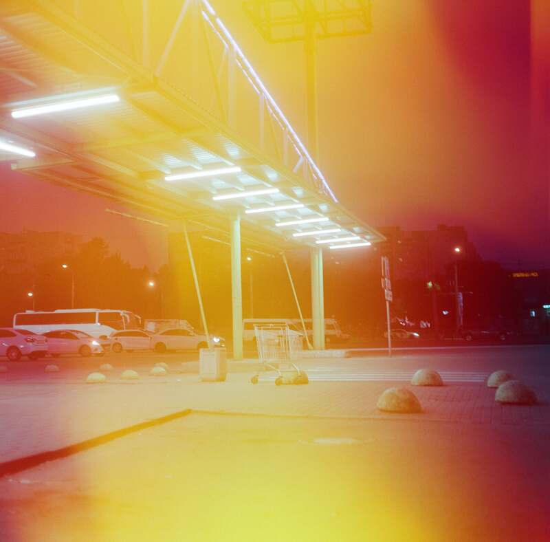
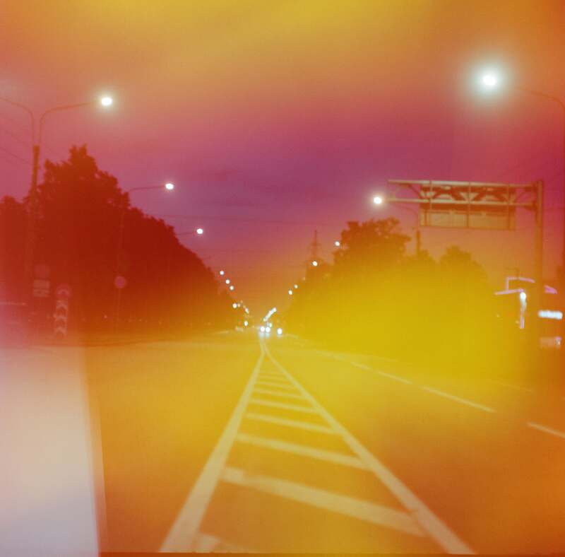
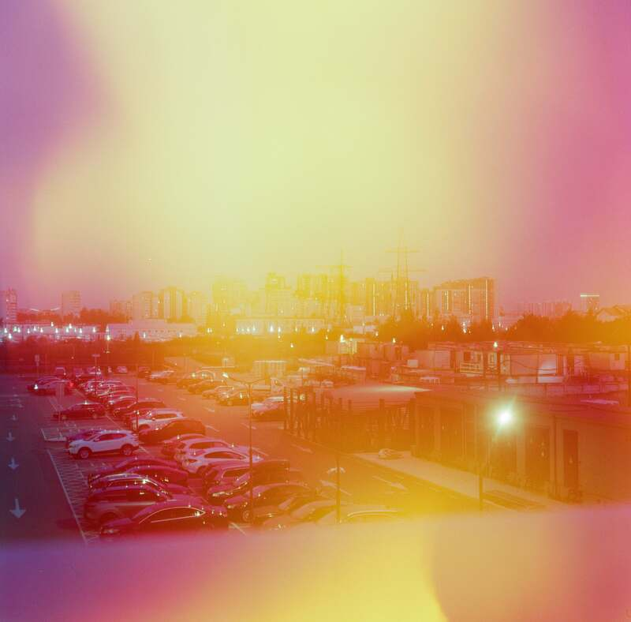
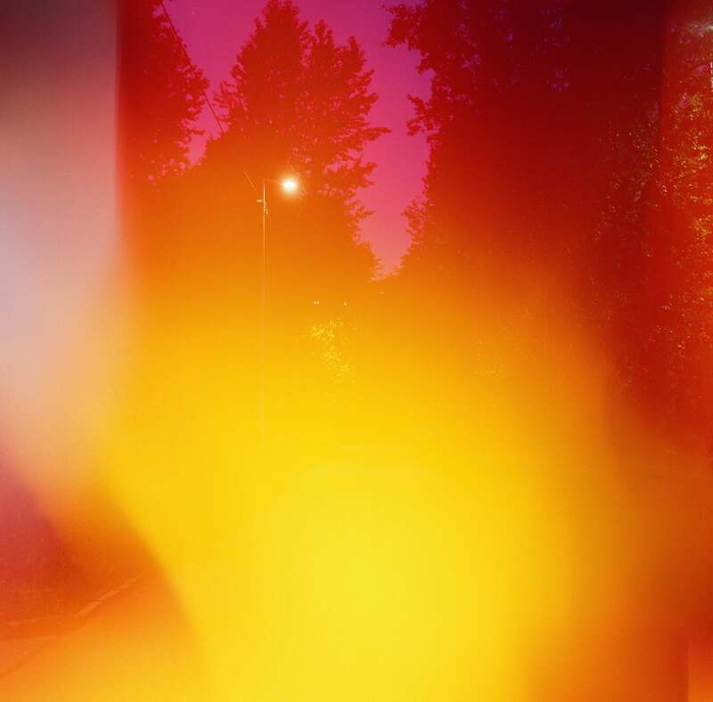
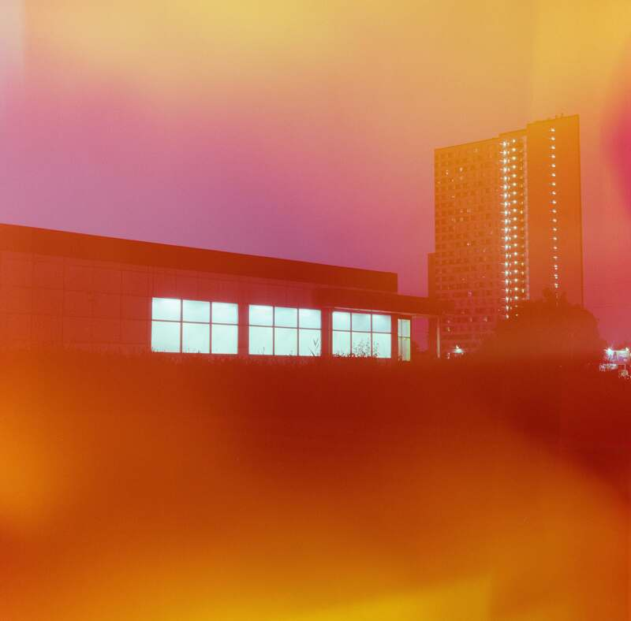
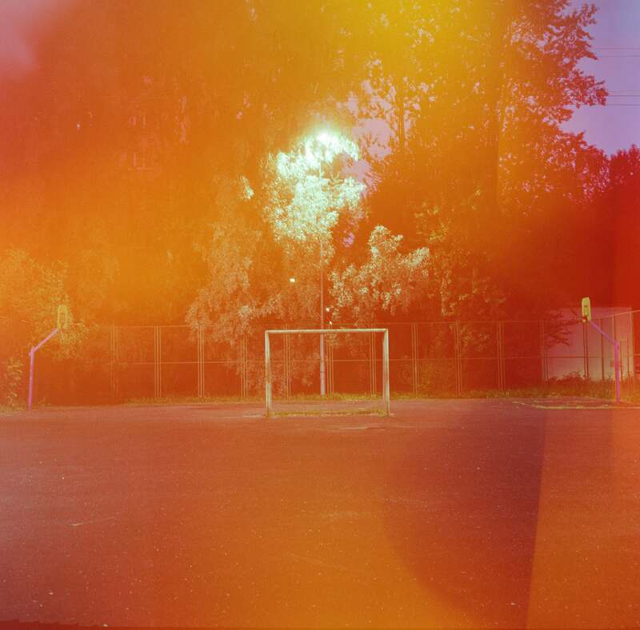

Пелена
Проект исследует переживание боли как состояния, способного изменить восприятие окружающей действительности. В моменты сильного эмоционального напряжения реальность перестает быть объективной: воспоминания, чувства и внутренние переживания становятся своеобразной пеленой, через которую человек смотрит на мир.
Визуальный язык проекта строится на использовании технического брака пленочной фотографии. Засветы, искажения и дефекты изображения перестают восприниматься как ошибки и становятся выразительным художественным приемом, отражающим внутреннее состояние автора. Тем самым проект обращает внимание на двойственную природу несовершенства: то, что изначально кажется неудачей или утратой, со временем может обрести новый смысл и стать неотъемлемой частью личного опыта.
«Пелена» предлагает увидеть в случайности не только след повреждения, но и возможность переосмысления, где боль перестает быть исключительно разрушительной силой и становится источником нового взгляда на себя и окружающий мир.





